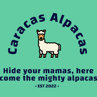

EKIPE
Gašper Herkovič Caracas Alpacas

Team owner: Gašper Herkovič
Joined league: 2019 (season 3)
History: Adis Abeba Anteatears (2022)
Arena: Poliedro de Caracas
Capacity: 20.000
Location: Caracas Venezuela
Average ranking: 3.80 (1st)
| Sezona | Uvrstitev |
|---|---|
| 2017/18 | //// |
| 2018/19 | //// |
| 2019/20 | 5 |
| 2020/21 | 5 |
| 2021/22 | 3 |
| 2022/23 | 1 |
| 2023/24 | 5 |
| 2024/25 | ... |
| AVERAGE | 3.80 |
Intervju - GAŠPER HERKOVIČ (september, 2022)
Prvi intervju smo opravili z Gašperjem Herkovičem, ki je letos ostal tako rekoč brez konkurence za najboljšega Gašperja. Ker se mu je s tem sprostilo nekaj živcev, se je zaobljubil, da bo skrbel za meme-content v letošnji sezoni.
1) Imate najboljšo povprečno uvrstitev v ligi. Ali to pomeni, da ste tudi najboljši manager lige, najbolj posran ali kaj tretjega?
Ali je biu lebron posran ko je dosego 8 zaporednih final? Ali je biu jordan posran za svoja 2 3-peata? Isto je v mojem primeru, kvaliteta pač sije ne glede na okoliščine.
2) Izbrskali smo podatek, da ste do zdaj porabili skupno 923$ v 47 transakcijah za Aleca Burksa. Ga boste letos končno kar draftali in lets just get over with it, ali greste po 1000$ porabe?
S povečanim številom managerjev bo Burks absolutno postal del moje ekipe. Kot bi rekel Fred, mojega mišeka pa kr nebom prepustil ostalim nubacom.
3) Povejte nam kako ste vi videli izkušnjo, ki je ne privoščimo nikomur - ne samo predaja pokala, temveč predaja pokala Ciciju of all people? Boli tako kot se sliši boleče?
Za nekatere je rock bottom ko ostanejo brez doma, ko prodajajo svoje telo za 5 evrov da lahko financirajo svoj crack addiction. No jaz sem svoj rock bottom doživel v procesu predaje pokala. "Nikoli več" sem si rekel na tisti temačni vecer in tega se bomo v Caracasu tudi držali.
Zaključna misel
Zaključna misel: želim vam vsem sezono brez poškodb, tkda mi pol aprila noben ne bo jamro da sm ga uničo sam zarat Ojev in Dtdjev! Nasploh pa mejmo se fajn!